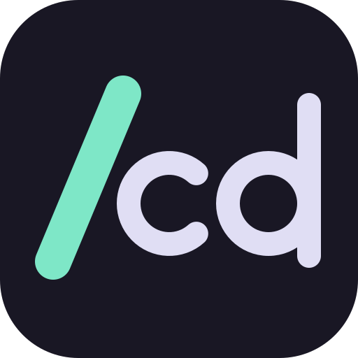
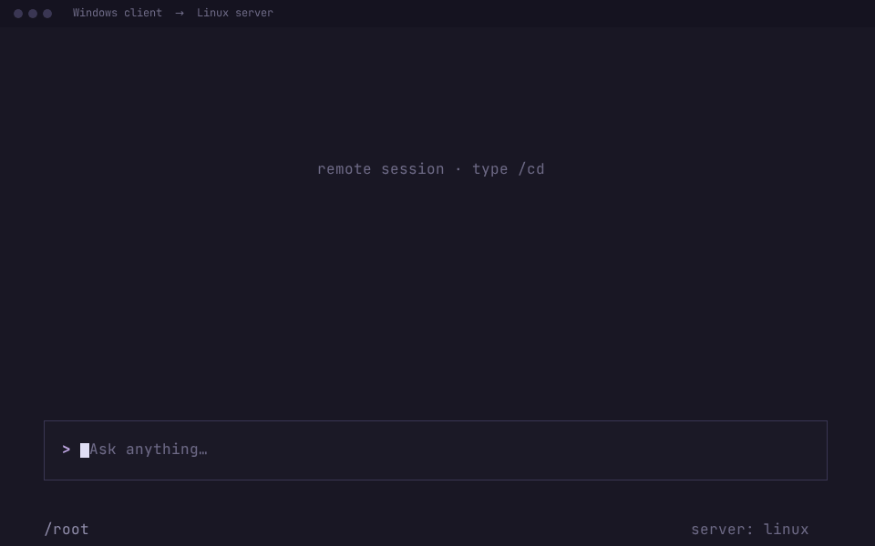

opencode-remote-cd/cd without the C:\
A small plugin for the OpenCode TUI that makes /cd work when your client and your server run different operating systems.

The bug
The TUI is a client; the server owns the filesystem. Run them on different operating systems and the client resolves paths with the wrong rules:
/cd /root/projects
Failed to change directory
Location not found: C:\root\projects~ expands to the client home, completion lists client directories, and the popup swallows Enter. Upstream: #47665, #55171, #59554.
Install
Run one command on the machine with the TUI, then restart the TUI. Not on npm yet.
$d = "$HOME\.config\opencode\plugins\opencode-remote-cd"; New-Item -ItemType Directory -Force $d | Out-Null; foreach ($f in "tui.tsx", "path.ts") { Invoke-WebRequest "https://raw.githubusercontent.com/bvironn/opencode-remote-cd/main/src/$f" -OutFile "$d\$f" }d=~/.config/opencode/plugins/opencode-remote-cd; mkdir -p "$d" && for f in tui.tsx path.ts; do curl -fsSL "https://raw.githubusercontent.com/bvironn/opencode-remote-cd/main/src/$f" -o "$d/$f"; done// ~/.config/opencode/cli.json — once the package is published
{
"$schema": "https://opencode.ai/v2/cli.json",
"plugins": ["opencode-remote-cd"]
}~ follows the server home, inferred from the server's directory. If the server starts outside /root or /home/<user>, set the home option (see the README).
Features
POSIX by default
/root/projects stays /root/projects, even from Windows.
Server completion
Real subdirectories from the server, not C:\root.
One key to descend
Enter completes, descends and commits.
Picker on demand
A bare /cd opens a searchable browser with .. and Use this directory.
Server ~
The tilde means the server home, inferred or configured.
No server changes
Client-side only. Two files, MIT.
How it works
The plugin shadows the built-in session.cd command. On the home screen it resolves with path.posix; inside a session it forwards the raw argument to session.move, so the server resolves it. Completion requests that arrive as drive-letter paths are translated back to POSIX before they reach fs/list.
Compatibility
| Setup | Status |
|---|---|
| Windows client → Linux server | ✓ Tested (the original case) |
| macOS client → Linux server | ✓ Supported |
| Same machine, same OS | ✓ Works; built-in /cd is already fine |
| OpenCode TUI 2.x | Tested with 2.3.2. Relies on a few TUI internals; a refactor may need an update. |